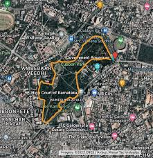
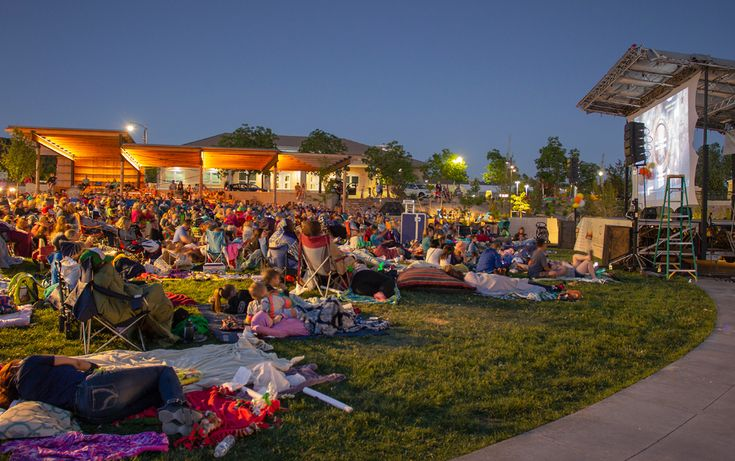

Cubbon Park: Bangalore’s Green Heart(Explore Nature, Heritage, and Tranquility)
Introduction:-
- Bangalore's Peaceful Green Escape
- Historic and Scenic Urban Park
- Vibrant Nature and Relaxation Hub
- Sprawling Landscape in City Center
- Rich Flora and Fauna Diversity
- Popular Destination for All Ages

History:-
- Founded in 1870 by John Meade
- Named after Lord Cubbon, commissioner
- Originally designed as a colonial park
- Used for British administrative purposes initially
- Preserved as a public green space

location:-
- Situated in Central Bangalore’s Heart
- Adjacent to Vidhana Soudha Building
- Accessible via Public Transport Easily
- Near Major Roads and Landmarks
- Surrounded by Commercial and Residential Areas
Architecture:-
- Victorian and Colonial-era Style
- Elegant Redstone Buildings and Structures
- Historical Monuments and Statues Present
- Blend of Nature and Architecture
- Heritage Conservation and Restoration
Attractions:-
- Statues of Notable Historical Figures
- Fountains with Decorative Water Features
- Vibrant Flower Gardens and Greenery
- British-era Monuments and Buildings
- Children’s Playground and Activity Zones

Activity:-
- Jogging and Morning Walks
- Cycling and Recreational Rides
- Yoga and Meditation Sessions
- Photography and Nature Observation
- Relaxing Picnics and Social Gatherings

Events:-
- Cultural Festivals and Performances
- Public Exhibitions and Art Displays
- Educational Programs and Workshops
- Community Gatherings and Social Activities
- Seasonal Celebrations and Environmental Events
.jpeg)
Visitor tips:-
- Open Daily, Timings: Morning to Evening
- No Entry Fee for Visitors
- Carry Water and Stay Hydrated
- Respect Park’s Rules and Regulations
- Explore Early Morning for Peaceful Experience